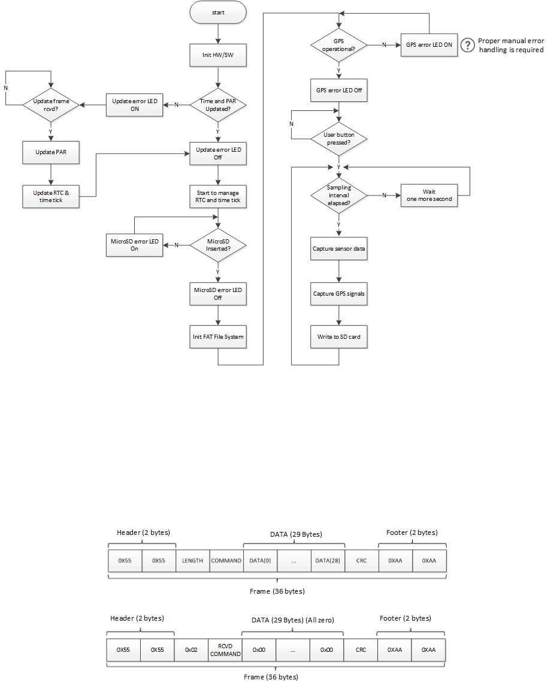

Software architecture
Software structure
- The software is fully interrupt-driven and the system remains in low-power-mode almost all the time
- Software is modularized into several sub-groups
- 'Sys' is for board-level abstraction and 'hal' is for hardware-level (mainly for MCU)
(cleon_conf.h (in 'platform') bridges 'sys' and 'hal')
(It means that it is possible to easily replace the MSP430F5338 with new MCU with minimum efforts by modifying 'hal' and 'cleon_conf.h' only)

- app : application programming interface (API) for sensor data logging and USB connectivity
- doc : documentation (files in this group will be excluded from build)
- fs : FatFs file system (http://elm-chan.org/fsw/ff/00index_e.html)
- hal : hardware access layer (HAL) for MSP430F5338
- main : contains main.c
- platform : platform definition
- sys : system functions
- output : target file generated by compiler
Software flowchart
The flowchart below briefly shows software flow
(Note that this is simplified flow and there would be a little difference in real operation)